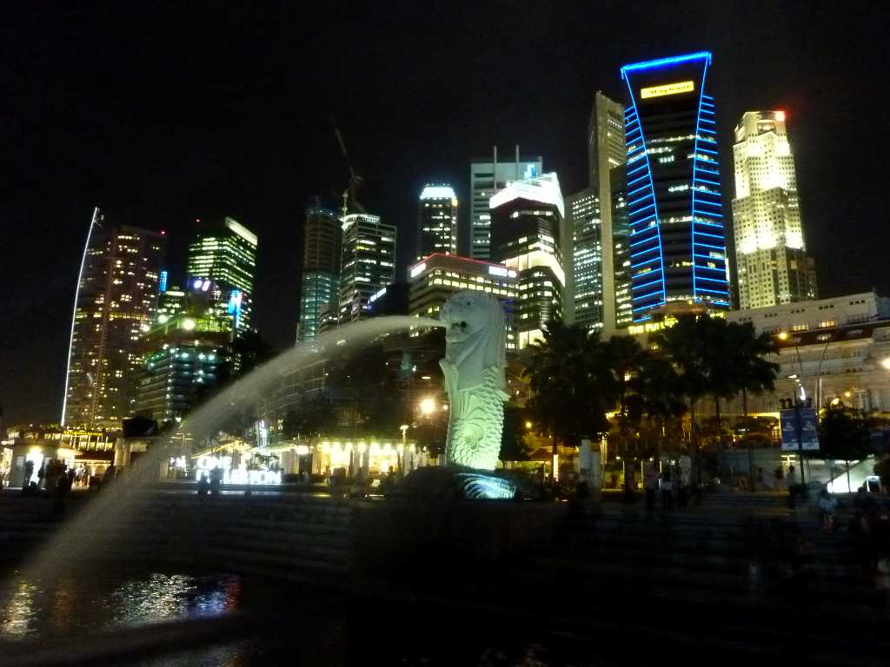
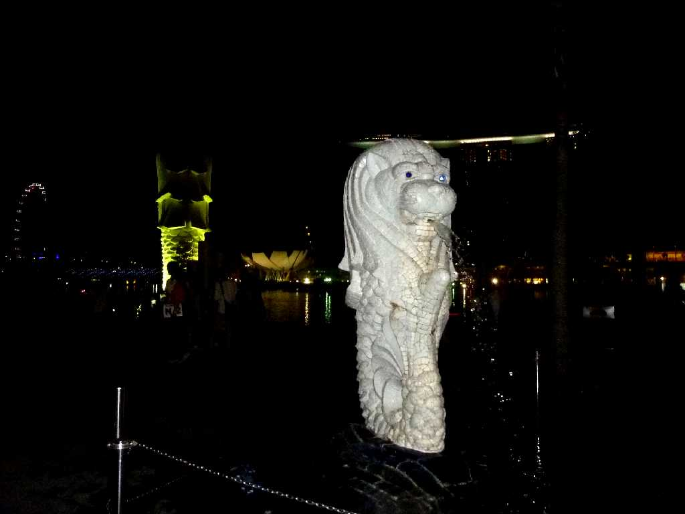
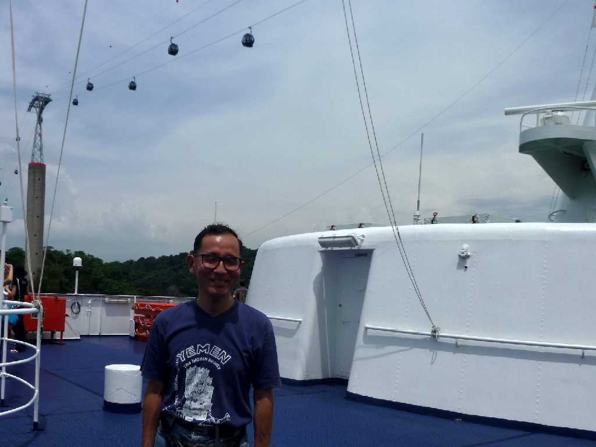
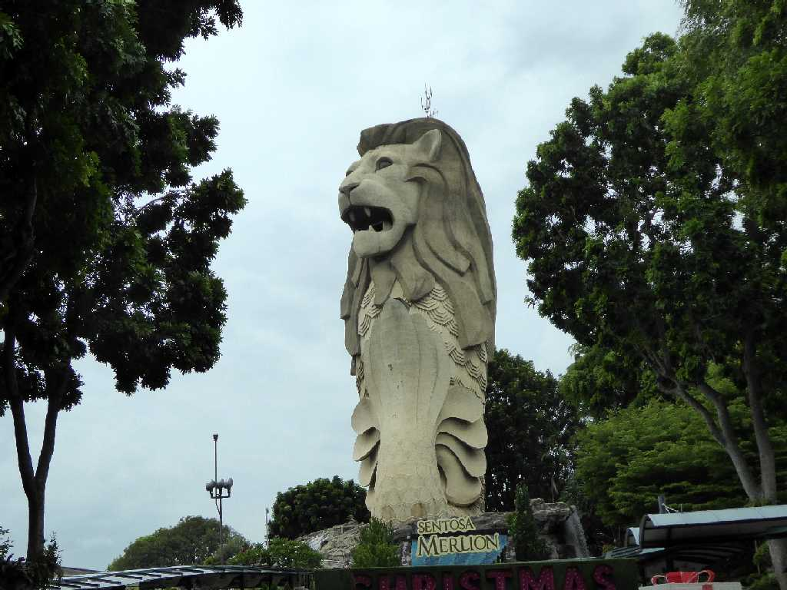
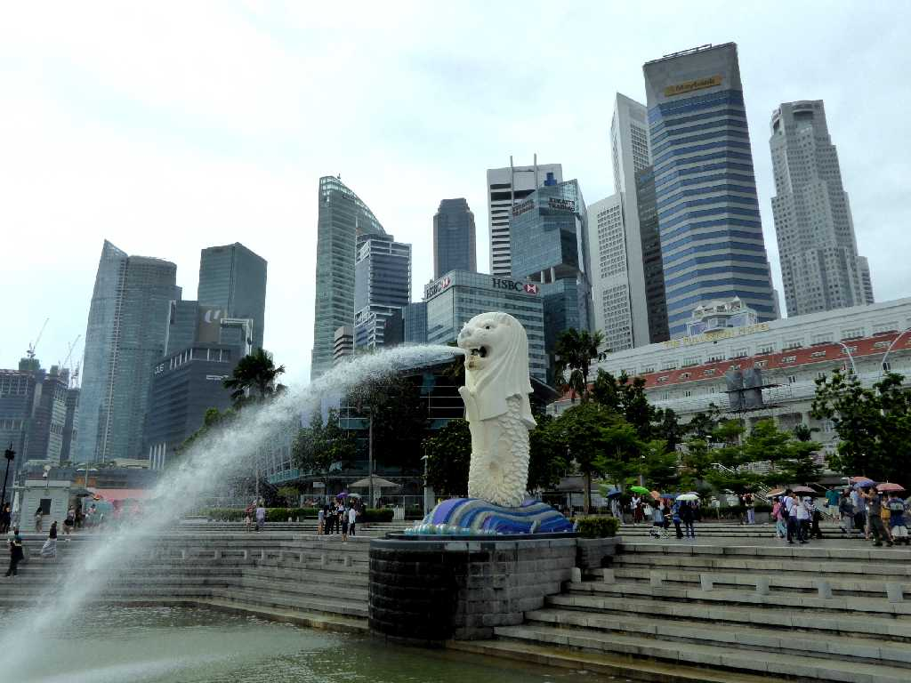
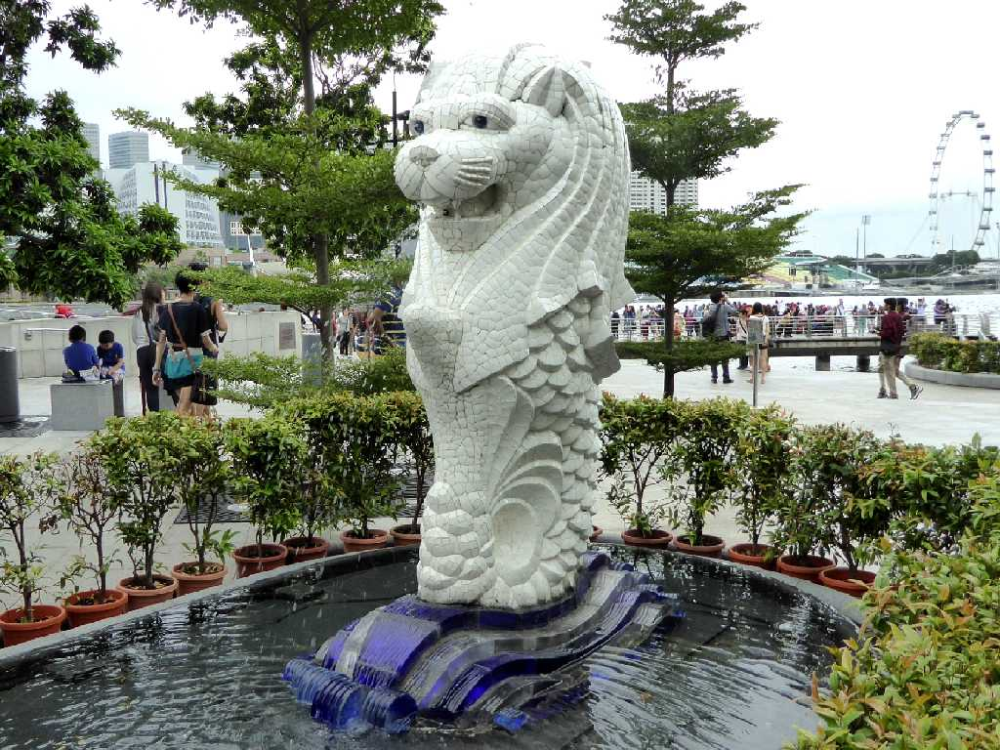
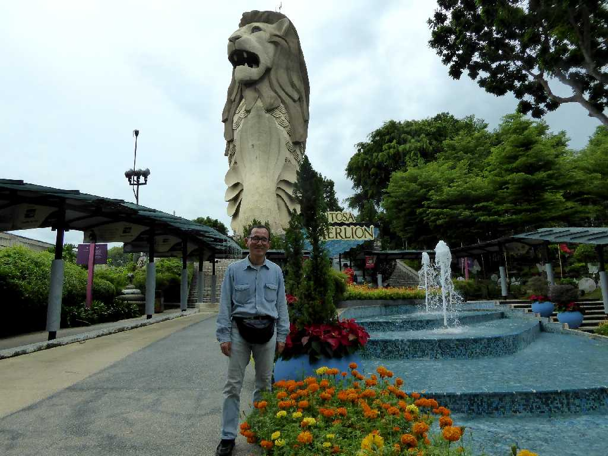
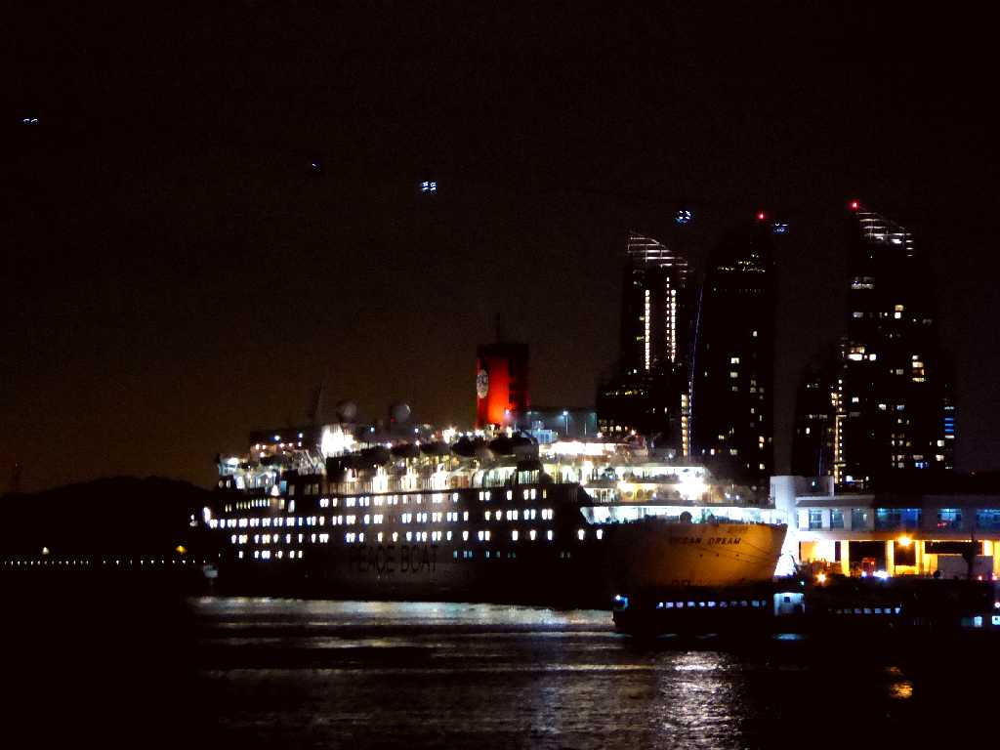

Merlion Marina Bay Singapore
マレー語でライオンsingaの町puraシンガプラの英語読みがシンガポール

Merlion Merlion Park
人魚MermaidのMerとライオンlionを合わせた上半身ライオン下半身魚の像

August 11 2010 SS Oceanic in Singapore Port

Merlion Sentosa Island Singapore
５年ぶりのの再訪問でシンガポールのレジャーランドのセントーサ島を訪れもう一つのマーライオンも観る

Merlion Marina Bay Singapore
前回国境を超えマレーシアのジョホルバールを観光したため夜景しか観れなかったので再訪問

Merlion Merlion Park

December 29 2015 Merlion Sentosa Island

Ocean Dream in Singapore Port
地球一周の船旅出港１３日目６,１０８ｋｍ航行しシンガポール港に着岸